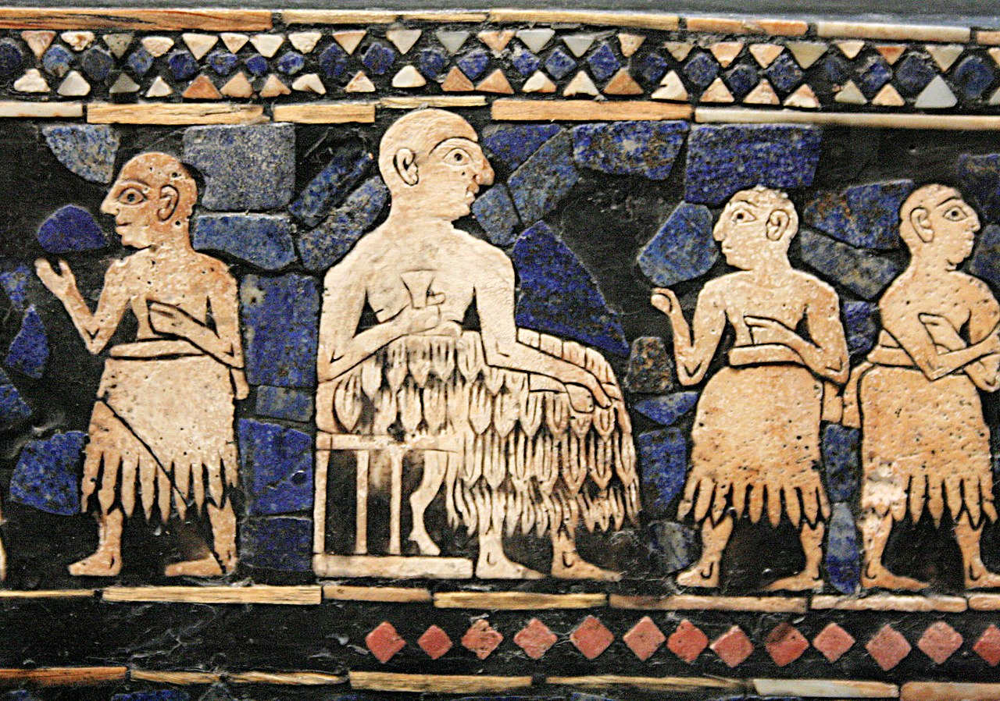
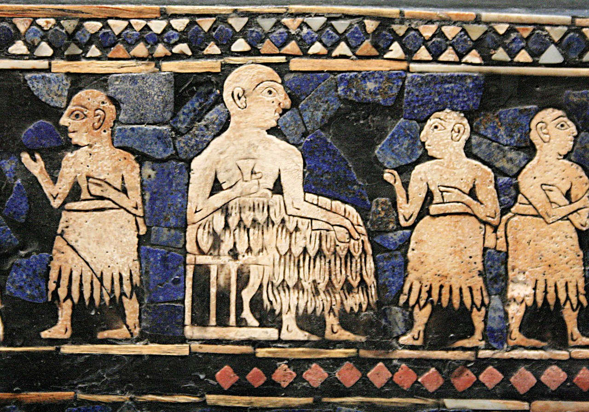

A sumerok
Mezopotámia területén élt a sumer nép. Öntözéses földműveléssel és állattenyésztéssel foglalkoztak. Főleg búzát, árpát és zöldségféléket termesztettek. A legelőkön juhot és szarvasmarhát legeltettek.
Mezopotámia területén élt a sumer nép. Öntözéses földműveléssel és állattenyésztéssel foglalkoztak. Főleg búzát, árpát és zöldségféléket termesztettek. A legelőkön juhot és szarvasmarhát legeltettek.
A sumer társadalom alapvetően városi jellegű volt, azzal együtt, hogy inkább mezőgazdasági alapokon nyugodott, mint iparin. Virágkora csúcsán, i.e. 3.500 – 3.000 körül, a sumer társadalom, városállamok laza halmaza volt, ahol minden város önálló életet élt, saját vezetőkkel, saját törvényekkel, saját iskolával. Nem hogy szövetség nem volt a városok között, hanem egymással rivalizáltak, néha pedig egymással háborúztak.

A sumer művészet legismertebb műtárgyai a Sir Leonard Woolley által a 20. század elején feltárt Ur királyi temetőjéből kerültek elő. Ezek közé tartozik az úgynevezett uri jelvény, bikafejjel díszített hárfák, Subat (Puabi) királynő fejdísze, Meszkalamdug király aranysisakja és egy játéktábla.